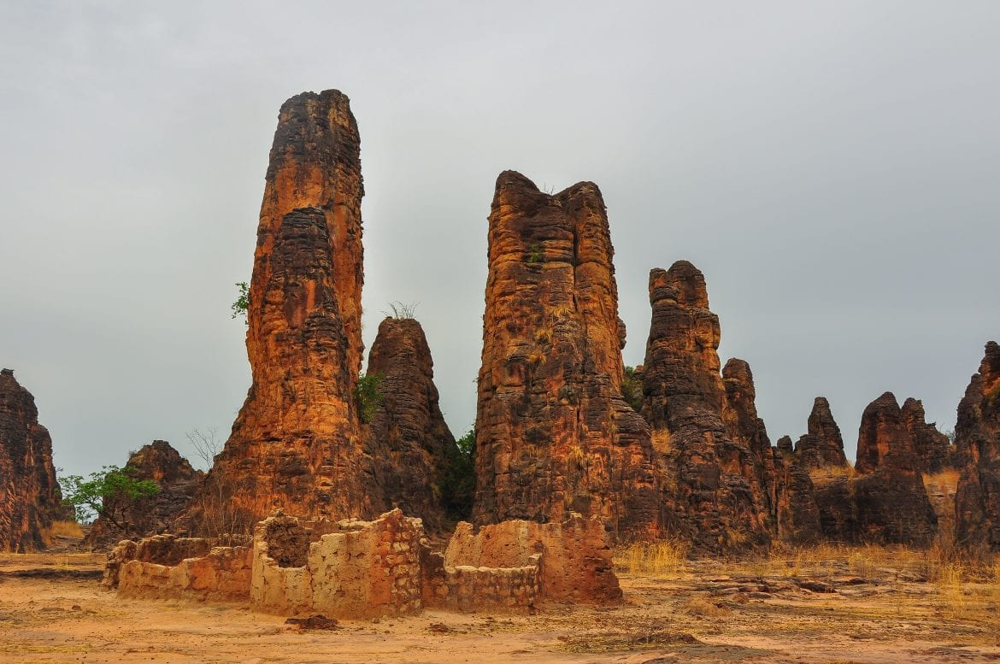
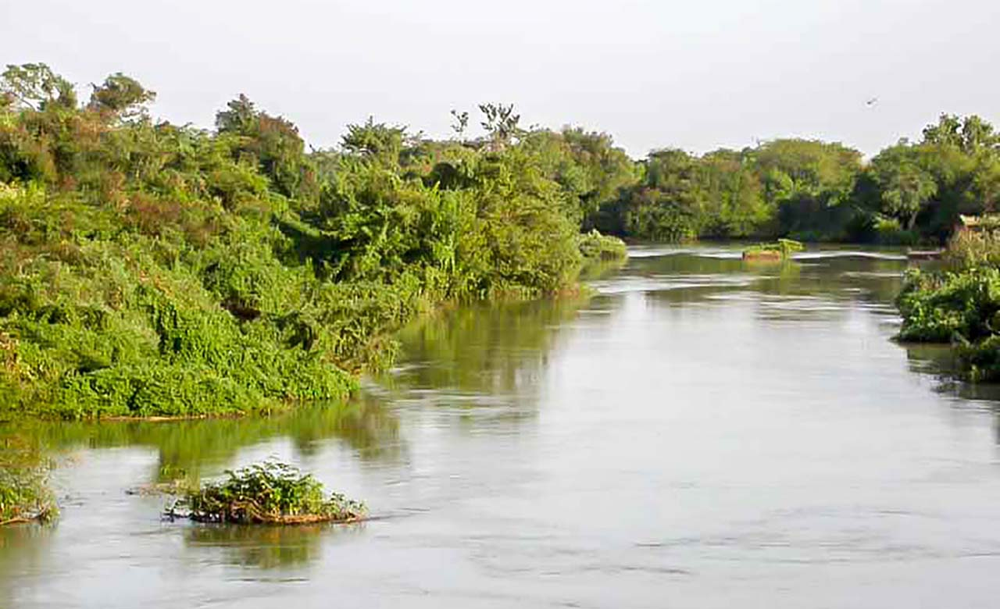
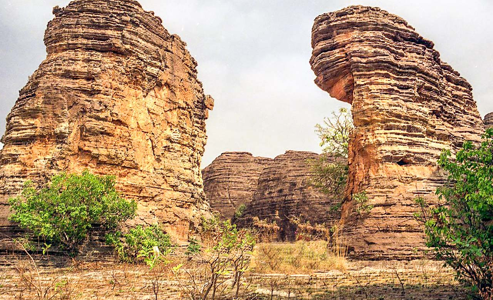
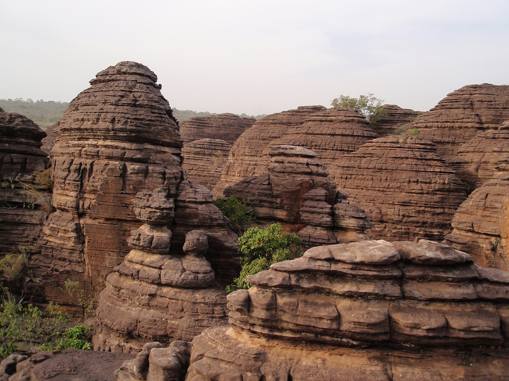
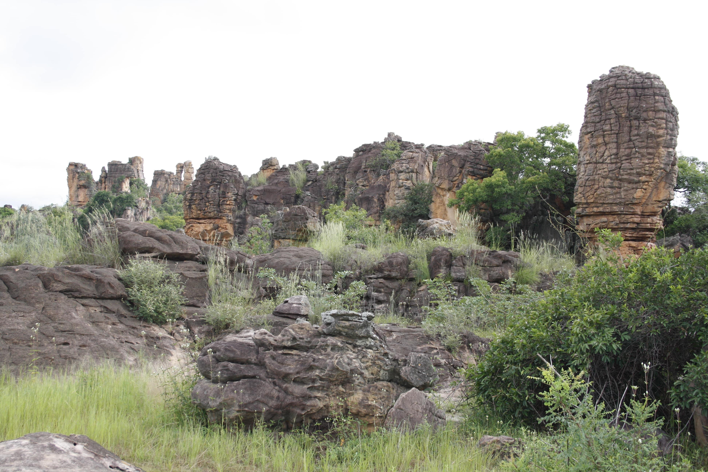
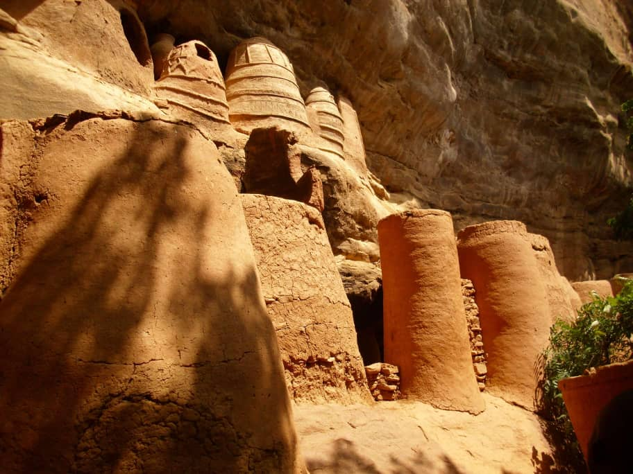
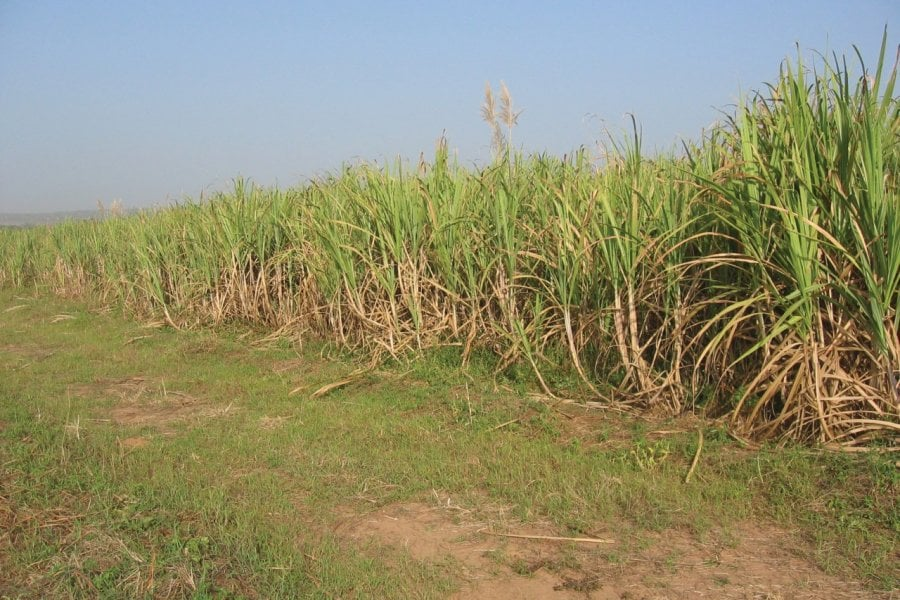
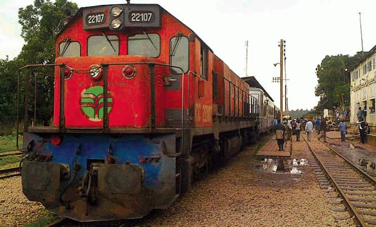

Cascades de Banfora ou cascades de Karfiguéla
Les pics de Sindou
Foret classee de Dida
Les falaises de Banfora
Dome de Fabedougou
cavernes de Douna

Lac de Tengrela (Mare aux Hippopotames)
village de Niansogoni
Champs de canne à sucre de Bérégadougou
La voie ferrée Abidjan-Ouagadougou